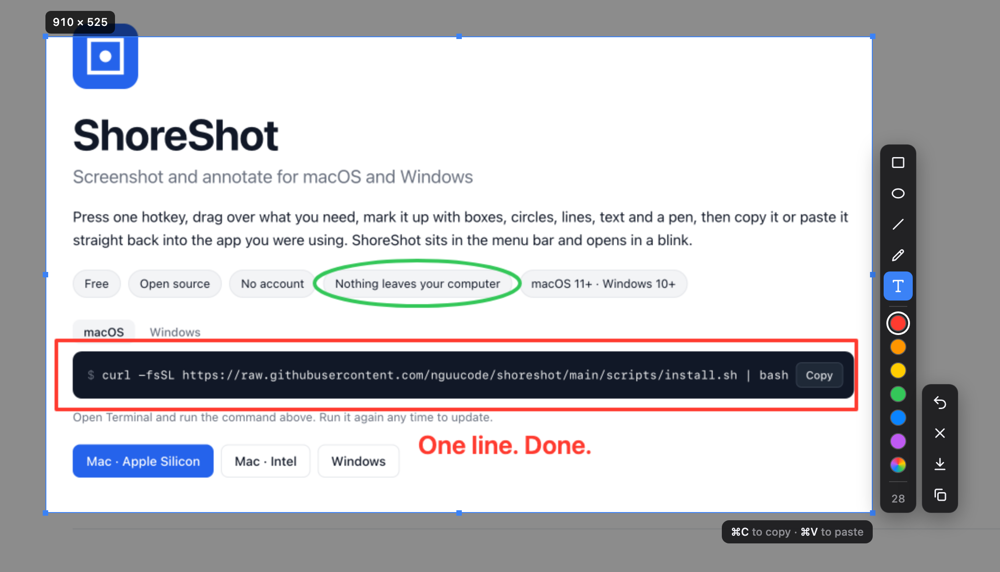

ShoreShot
Screenshot and annotate for macOS and Windows
Press one hotkey, drag over what you need, mark it up with boxes, circles, lines, text and a pen, then copy it or paste it straight back into the app you were using. ShoreShot sits in the menu bar and opens in a blink.
- Free
- Open source
- No account
- Nothing leaves your computer
- macOS 11+ · Windows 10+
curl -fsSL https://raw.githubusercontent.com/nguucode/shoreshot/main/scripts/install.sh | bashOpen Terminal and run the command above. Run it again any time to update.

Features
Area, window or full screen
Drag to select an area, click a window to frame it, or grab the whole display. Each mode can have its own hotkey.
Fast to open
The capture window is ready before you press the hotkey, so it appears the moment you ask for it.
Mark it up
Rectangle, ellipse, line, pen and text in six colors or any custom one. Scroll to change the stroke or font size.
Paste where you were
⌘V copies the capture and pastes it into the app you came from: Slack, Telegram, Figma, an email.
Fix mistakes
Hover a shape and press ⌫ or right-click to delete it. Undo and redo everything. Click text to edit it.
Sharp on Retina
Exports at native resolution, or at 1× when you want smaller files. Saves PNG to your Pictures folder.
Adjust after drawing
Drag an edge or a corner of the selection to resize it, even after you have started annotating.
Private
No account, no upload, no tracking. The only network call checks GitHub for a new version.
Install with one line
One command installs, updates or removes the app on macOS and Windows. ShoreShot tells you when an update is out.
Shortcuts
| Action | macOS · Windows |
|---|---|
| Capture an area | ⌘⇧X · Ctrl+Shift+X (change it in Settings) |
| Capture full screen / a window | Assign a hotkey in Settings, or use the tray menu |
| Rectangle, ellipse, line, text, pen | R O L T P · hold Shift for a square or circle |
| Copy | ⌘C or Enter · Ctrl+C |
| Copy and paste into the previous app | ⌘V · Ctrl+V |
| Save PNG | ⌘S · Ctrl+S |
| Undo / redo | ⌘Z ⌘⇧Z · Ctrl+Z Ctrl+Y |
| Delete the shape under the cursor | ⌫ or right-click · Delete or right-click |
| Close | Esc |
Questions
Is ShoreShot free?
Yes. It is free and open source under the MIT license. There is no paid tier and no account.
Why does macOS ask for Screen Recording?
macOS requires it for any app that reads the screen. Turn on ShoreShot in System Settings › Privacy & Security › Screen & System Audio Recording, then choose “Quit & Reopen”. If you dismissed the prompt, the next capture shows a button that opens that page.
Why does it ask for Accessibility?
Only for ⌘V, which pastes into another app for you. Copy, save and everything else work without it. Without the permission ShoreShot still copies the image and tells you to press ⌘V yourself.
macOS says the app “is damaged” or “cannot be opened”
The app is not notarized by Apple. The install command avoids this. If you downloaded the .dmg, run this once and open the app again:
xattr -cr /Applications/ShoreShot.app
Windows shows a SmartScreen warning
The installer is not code-signed. Click More info › Run anyway, or use the PowerShell command, which installs without the warning.
How do I change the hotkeys?
Click the ShoreShot icon in the menu bar or tray › Settings…, click the field next to a capture mode and press the new combination. If another app already uses it, ShoreShot says so and keeps the old one.
How do I update?
Run the install command again. ShoreShot checks for a new version at startup and every 12 hours and shows a notification when one is out.
How do I uninstall?
macOS:
curl -fsSL https://raw.githubusercontent.com/nguucode/shoreshot/main/scripts/install.sh | bash -s -- --uninstall
Windows (PowerShell):
& ([scriptblock]::Create((irm https://raw.githubusercontent.com/nguucode/shoreshot/main/scripts/install.ps1))) -Uninstall
Does it capture more than one display?
One display per capture: the one under the mouse cursor.